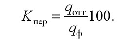
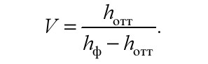

Перенос краски с формы на запечатываемый материал, т. е. получение оттиска - решающая стадия всего печатного процесса. Сущность стадии переноса печатной краски заключается не только в том, чтобы обеспечить условия, при которых в течение короткого промежутка времени (сотых и тысячных долей секунды) практически на уровне сил контактного взаимодействия будет происходить разделение тонкого (около 0,1−5 мкм) слоя краски между красконесущей и красковоспринимающей поверхностью, но и в переносе красочного изображения.
С технико-технологической точки зрения наиболее полное и всестороннее суждение о характере краскопереноса можно получить на основании оценки следующих параметров:
1) количества краски, переносимой на запечатываемый материал при различной подаче ее на форму;
2) особенностей распределения краски на поверхности и в толще запечатываемого материала, предопределяющих четкость контуров изображения, размерные (графические) характеристики, тщательность проработки запечатанных и незапечатанных участков в границах красочного изображения, равномерность (т. е. однородность) поверхностной структуры составляющих его элементов, а также градационные и цветовые особенности воспроизводимой информации.
В наиболее общем виде количество краски, переносимой на запечатываемый материал у, является функцией двух взаимосвязанных переменных величин:
1) количества, г/м2 (или толщины слоя, мкм), краски на печатной форме (qф или hф — в более общем случае x);
2) эффективной площади поверхности контакта между бумагой и краской Sэфф, т. е. у = F(x, Sэфф).
При этом под эффективной площадью поверхности контакта подразумевается фактическая величина площади соприкосновения бумаги с краской при данных условиях осуществления печатного процесса. Следовательно, Sэфф представляет собой функцию следующих факторов: характера поверхности и структурно-механических (деформационных) свойств бумаги, вязкости и других реологических свойств краски, давления, скорости печатания.
Наиболее полной характеристикой является краскоемкость бумаги, определяющаяся минимальным количеством краски, необходимыми достаточным для заполнения всех внешних неровностей поверхности бумаги в момент печатного контакта.
При этом подразумевается, что (при технологически необходимой толщине слоя краски на форме) внешние неровности поверхности бумаги (впадины и углубления) начнут заполняться после того, как некоторое количество краски под действием давления будет внедрено в приповерхностные поры и капилляры.
Краскоемкость бумаги определяется, сопоставляется и рассчитывается с использованием характеристических кривых краскопереноса, т. е. зависимостей между количеством (толщиной слоя) краски на печатной форме и коэффициентом переноса краски.
Применительно к переходу краски с формы на запечатываемый материал коэффициент переноса Kпер, %, определяется выраженным в процентах отношением количества (или толщины слоя) краски, перешедшей на оттиск (qотт или hотт), к количеству (или толщине слоя) краски на форме до печатания (qф или hф), т. е.
|  | (20) |
Иногда для характеристики переноса краски используется коэффициент расщепления V, выражаемый как отношение количества (или толщины слоя) краски на оттиске к количеству (или толщине слоя) краски, оставшемуся на форме после печатания:
|  | (21) |